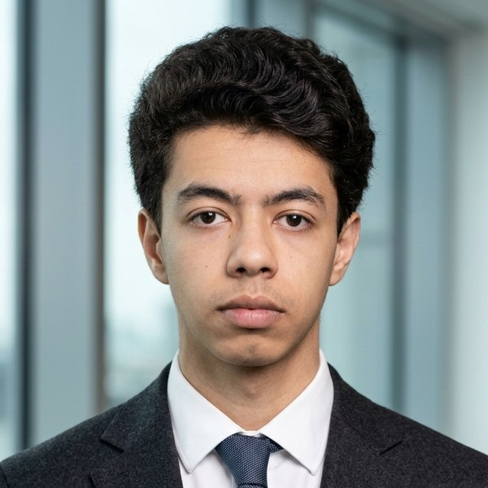

Hi, I'm El Yazid
I'm a
After a Mathematical Sciences baccalaureate and two years of intensive preparatory classes (MPSI/MP), I joined ENSEEIHT in 2026 to study Digital Sciences (Sciences du Numérique). Rigorous and motivated, I want to become a cybersecurity engineer and help protect the systems people rely on every day.
My path
ENSEEIHT — Engineering degree, Digital Sciences (Sciences du Numérique)
Toulouse INP, France · programming, algorithms, networks, systems.
Preparatory classes MPSI / MP — CPGE Lycée Moulay Abdellah
Morocco · Intensive two-year program in mathematics, physics and computer science, leading to the competitive entrance exams of French engineering schools.
Moroccan Baccalaureate — Mathematical Sciences
Morocco
Engineering Courses & Projects
The scientific foundations I built, and the projects I am starting in cybersecurity.
CPGE MPSI / MP — Scientific foundations
Two years of intensive mathematics, physics and computer science. This demanding program taught me rigour, problem-solving and how to work under pressure.
MathematicsPhysicsPythonAlgorithms
ENSEEIHT — Digital Sciences (Sciences du Numérique) (1st year)
Core engineering courses in programming, algorithms, computer architecture, operating systems and networks — the technical basis for a career in cybersecurity.
ProgrammingLinuxNetworks
Personal goal — Cybersecurity challenges
I am starting to train on ethical hacking platforms (Root-Me, TryHackMe) to practise network security, web vulnerabilities and cryptography outside the classroom.
CybersecurityCTFSelf-learning
Skills
PythonAlgorithmsMathematicsLinux (learning)Networks (learning)Problem-solvingRigour
Civic Engagement
Commitments that shape who I am.
Getting involved at ENSEEIHT
Since arriving in Toulouse, I have been discovering the student life of ENSEEIHT and its many clubs and associations. I want to get involved, especially in activities linked to cybersecurity, sport and helping other international students settle in.
Mobility
Past international experiences and future plans.
Past experiences
My first big mobility was moving from Morocco to France in 2026 to study engineering. Adapting to a new country, a new education system and a new way of life taught me autonomy, adaptability and the value of cultural diversity — and made me eager to go even further.
Languages
Arabic — native · French — fluent · English — intermediate
Future mobility
My three international mobility projects are aligned with my role models.
See my career project →My dream: working in cybersecurity in the United States
Ever since I became interested in cybersecurity, the United States has been my main goal. It is where the biggest tech companies, the most advanced security research and some of the best universities in the world are. I want to be part of that environment.
I see myself first going there for an exchange semester or an internship, to learn from experts in network security and threat analysis, and to work every day in English in an international team. Later, I would love to start my career there.
To get there, I am working on my English, building strong technical foundations at ENSEEIHT and practising on cybersecurity platforms on my own. Moving from Morocco to France showed me that I can adapt to a new country — the USA is my next step.
Exchange semesterInternshipCybersecurityEnglish
Career Project
My résumés, my elevator pitch, the professionals who inspire me and my international mobility plans.
📄 Download my résumés
🎤 Elevator Pitch — Unique Value Proposal
👤 Three Role Models
Three cybersecurity professionals whose careers I analysed through online research (interviews, talks and public profiles).
Guillaume Poupard — Chief Trust Officer, Orange (France)
Path: Engineer and PhD in cryptology. Director of ANSSI, the French national cybersecurity agency, from 2014 to 2022, then deputy CEO of Docaposte (La Poste group). Since 2026, Chief Trust Officer at Orange, in charge of trust and digital sovereignty.
Why he inspires me: he started from mathematics and cryptology, like my prépa background, and became the person responsible for protecting a whole country's digital systems.
Key takeaway: strong scientific foundations open the door to the highest responsibilities in cybersecurity.
Mikko Hyppönen — Chief Research Officer, Sensofusion (Finland)
Path: Joined F-Secure in 1991 and spent 34 years fighting malware at F-Secure and WithSecure. His team took down the Sobig.F botnet and he helped police in the US, Europe and Asia. In 2025 he moved to Sensofusion to work on anti-drone technology.
Why he inspires me: he became a world expert while staying curious all his career, and he explains security clearly to the general public.
Key takeaway: cybersecurity keeps changing; you have to keep learning and adapt to new threats.
Parisa Tabriz — Vice President, Chrome, Google (USA)
Path: Bachelor's and master's in computer science at the University of Illinois. Joined Google's security team around 2007 after an internship, led Chrome security, then Project Zero, and is now Vice President of the Chrome division.
Why she inspires me: she only discovered coding at university, and an internship was enough to launch a great career in the United States.
Key takeaway: an internship can be the first step to a career in a top US tech company.
🌍 Three International Mobility Projects
Exchange semester in Northern Europe
Linked to: Mikko Hyppönen
Spend a semester in a university abroad, ideally in a Nordic country known for its cybersecurity expertise, to take advanced courses in network security and malware analysis, in English.
Internship in an international cybersecurity team
Linked to: Guillaume Poupard
Do an internship abroad in the international team of a large cybersecurity company, to see how critical systems are protected and how incidents are handled.
Working in the United States
Linked to: Parisa Tabriz
My long-term goal: start my career in cybersecurity in the USA, the world leader in this field, beginning with an internship as she did.
Sports & Interests
What keeps me balanced.
Football
Football has been part of my life for years. It taught me team spirit, communication and how to stay focused under pressure — skills I bring to every group project.
Cybersecurity
I am fascinated by how systems can be attacked and protected. I follow cybersecurity news and I am starting to practise on ethical hacking platforms.
Discovering cultures
Moving from Morocco to France opened my eyes to new cultures and ways of thinking. I enjoy meeting people from different backgrounds.